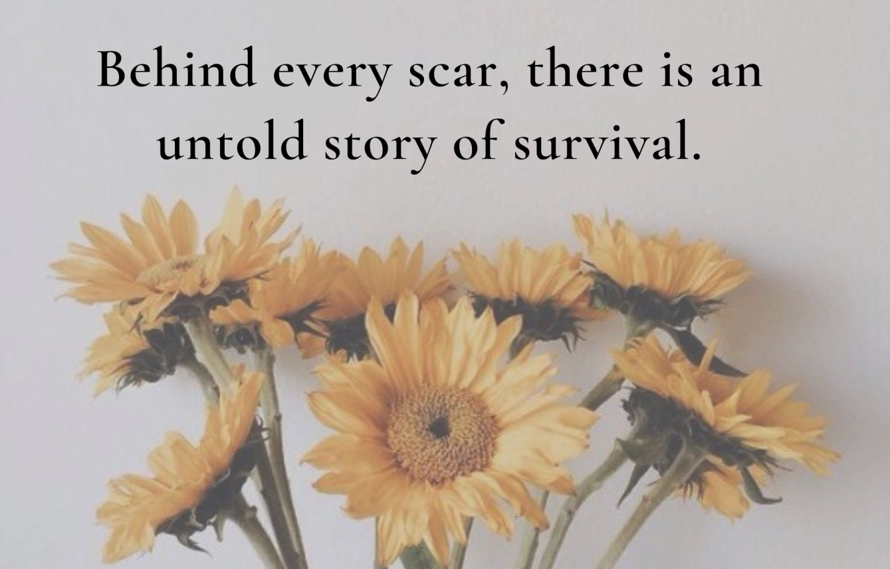

When it rains, look for rainbows. When it's dark, look for stars.
It may be hard to find your silver lining during a cancer diagnosis, but it's there.
If you look for it, you will find it.
Surviving cancer is anything but easy. Doing it once may be the toughest thing you ever do. For those who’ve done it more than once,
you know firsthand that it never gets easier. That’s because every cancer diagnosis is unique in its challenges. Google
“surviving cancer” and you’ll likely find this definition: “Continuing to live or exist, especially in the face of hardship.”
You often hear cancer described as a "battle" where you have to "fight" to survive. But since the "fight" is never really fair,
exactly how does an individual survive cancer?